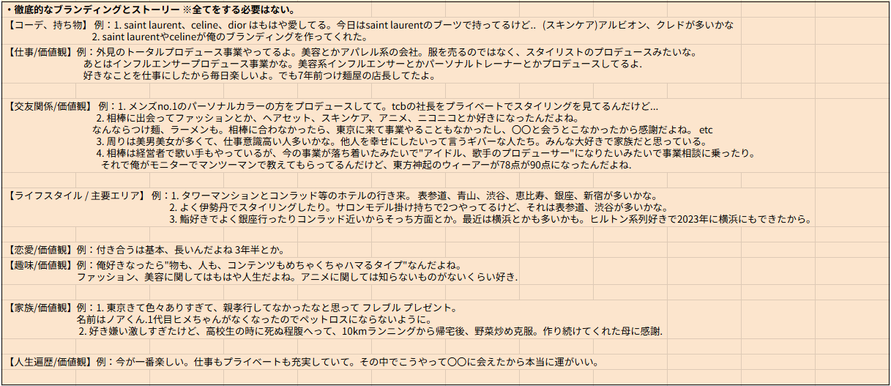
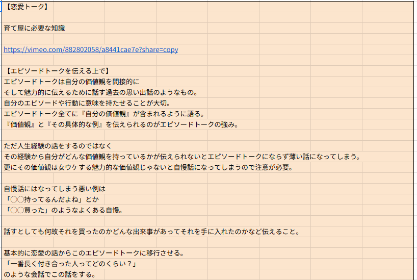
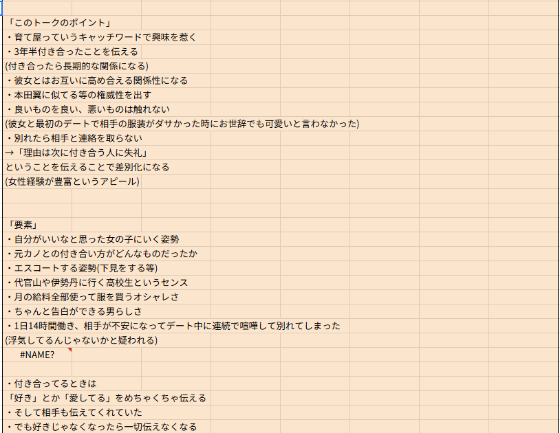
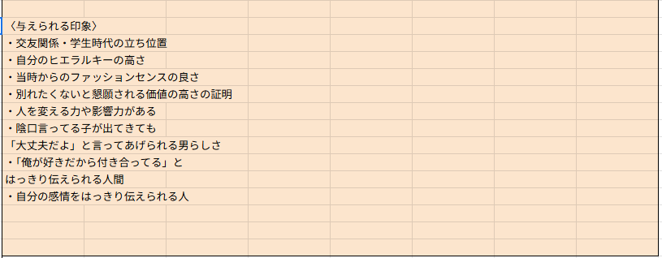

エピソードトークは、人間関係・会話のあらゆる場面で使える最強の武器です。話す内容だけでなく、「どう話すか」を徹底的に磨きましょう。
このセクションの目次
Contents
- 1. エピソードトーク基礎 — インプット・アウトプット
- 2. エピソードトーク中級 — ko2回目・ami様々な恋愛トーク
- 3. コンサルタントへ — リアクションの強さで惹く
- 4. essential — プレデートエスコート
- 5. エピソードトーク活用編 — 女性インフルエンサーとの会話
- 6. エピソードトーク リアルデート 仕事・友人・趣味・恋愛要素
- 7. エピソードトーク — "やばい話" / "育て屋"だった話
- 8. essential — 人生遍歴 要素
- 9. essential — エピソードトーク リアクションお手本
- 10. essential — エピソードトーク 趣味 要素 解説
- 11. 現役アイドルとの会話 — 医者になるストーリー
エピソードトークの核心
エピソードトークとは単なる自己紹介ではなく、相手を自分の世界観に引き込む「体験の共有」です。過去・現在・未来の3軸でトークを展開し、相手との共通点を作りながら感情を動かします。




動画解説
※動画は順番に視聴してください。
essential — エピソードトーク Vol.1（最新版）
essential — エピソードトーク Vol.2（最新版）
essential — エピソードトーク Vol.3（最新版）
1. エピソードトーク基礎 — インプット/抑揚/共通点の作り方&共通エピソードの出し方
essential — エピソードトーク インプット・抑揚・共通点の作り方｜amiエピソードトーク一部 人間関係/人生で楽しかった時期/スキンケアハマったきっかけと過去/アニメの素晴らしさ/HUNTER×HUNTERの良さ
essential — エピソードトーク プレテスト コンサルタント用 引き出し方 簡易版
2. エピソードトーク中級 — ko 2回目ラスト / ami様々な恋愛トーク
essential — エピソードトーク ko 2回目ラスト｜ami×koya友人エピソード｜電話始めの高めのテンション例｜ami様々な恋愛トーク ボケ&ツッコミ、聴く姿勢、笑い方
3. コンサルタントへ — リアクションの強さで惹く
essential — コンサルタントへ リアクションの強さで惹く
4. essential — プレデートエスコート
ko×ami デート練習
essential — ボディタッチの仕方 具体例
essential — コンサルタント用 プレテスト デートエスコート流れ 簡易版
会話サンプル — 元恋人トーク
5. エピソードトーク活用編 — 女性インフルエンサーとの会話
▶︎女性インフルエンサーとの会話 ※エピソードトーク制作：実例 絶対に必要な理由と実践
6. エピソードトーク リアルデート 仕事・友人・趣味・恋愛要素
エピソードトーク — リアルデート 仕事・友人・趣味・恋愛要素 話す事でどんな要素を与えられるか？
7. エピソードトーク — "やばい話" / "育て屋"だった話
エピソードトーク — 恋愛 "育て屋"だった話
8. essential — 人生遍歴 要素 一番楽しかった時、辛かった時
essential — 人生遍歴 要素 一番楽しかった時、辛かった時
9. essential — エピソードトーク リアクションお手本 アニメ｜ヒロアカ
essential — エピソードトーク リアクションお手本 アニメ｜ヒロアカ
10. essential — エピソードトーク 趣味 要素 解説｜吸収する力
essential — エピソードトーク 趣味 要素 解説｜吸収する力
11. 現役アイドルとの会話 — 医者になるストーリー｜現役アイドルと壁打ち
essential — エピソードトーク制作｜医者になるストーリー｜現役アイドルと壁打ち